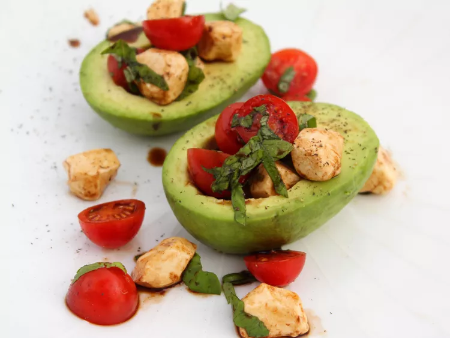

This Caprese stuffed avocado salad is made up of avocado halves, filled with a simple Caprese salad using cherry tomatoes, mozzarella pearls, and basil, and drizzled with balsamic vinegar.
Arrange avocado halves onto a plate.
together mozzarella pearls, cherry tomatoes, and basil in a small bowl. Spoon the Caprese filling into each avocado half and drizzle with balsamic vinegar. Season with salt and pepper. Serve immediately.